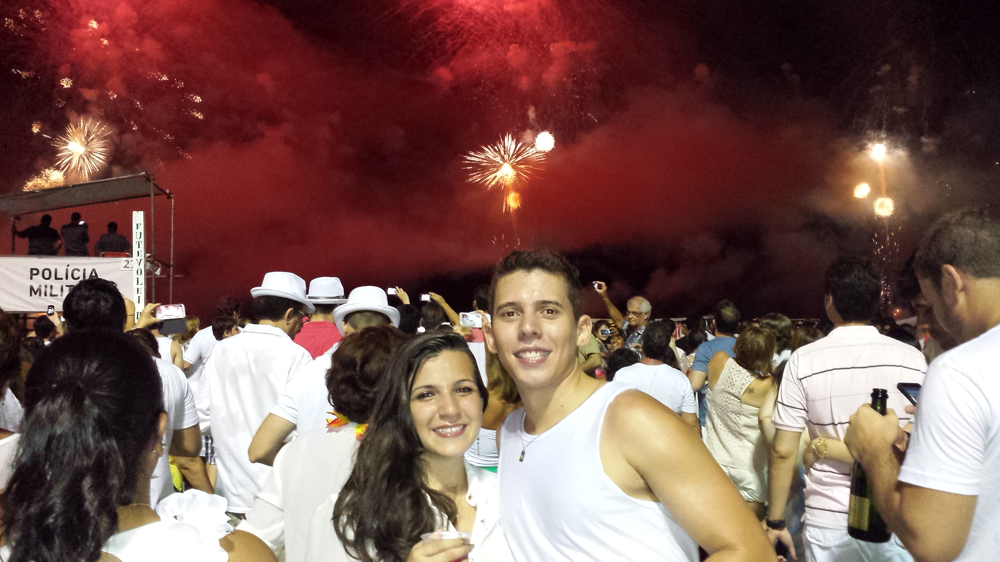
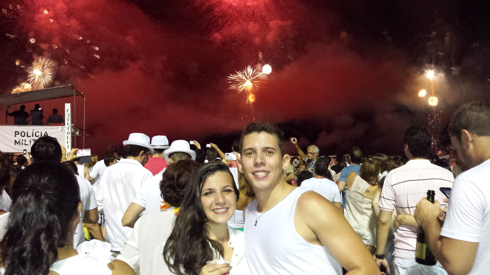

Sobre nós


 



Gostariamos de compartilhar um pouco da nossa história!
Queridos amigos e familiares,
estamos prestes a viver um momento muito especial em nossas vidas, e queremos compartilhá-lo com vocês. Aqui estão algumas fotos que capturam nossa trajetória até aqui. Cada imagem representa um momento único e especial. Sintam-se à vontade para clicar nas fotos e descobrir as histórias por trás de cada uma.
×